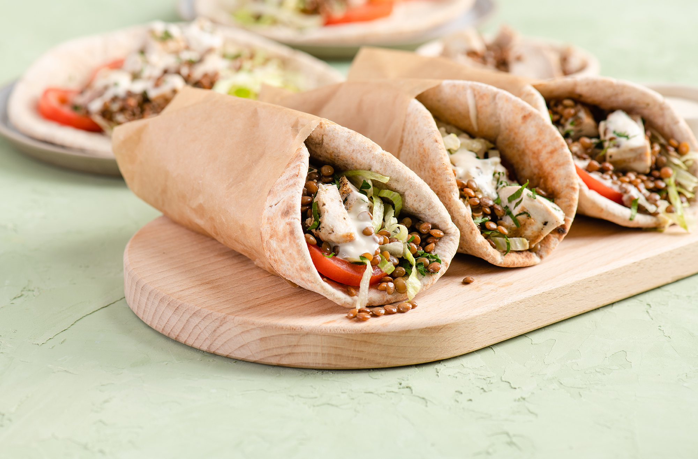

SHAWARMA

Keep calm and Eat shawarma --
Shawarma (/ʃəˈwɑːrmə/; Arabic: شاورما) is a popular Levantine dish consisting of meat cut into thin slices, stacked in a cone-like shape, and roasted on a slowly-turning vertical rotisserie or spit.
Originally made with lamb or mutton, it is now also made of chicken.
Ingredients
- 500 grams Chicken
- 2 tablespoons Extra Virgin Olive
- Spices
- Lemon juice
Steps needed for making the dish:
- Make the shawarma spice mixture. Simply add the spices into a small bowl and mix to combine.
- Cut up some boneless, skinless chicken thighs into small bite-size pieces (you can use chicken breast if you like, this is just my personal preference.)
- When ready, lay the chicken shawarma on a large sheet pan and bake in 425 degrees heated oven for 30 minutes or so (you can check a bit earlier as ovens do vary.)
- The true Middle Eastern way to serve chicken shawarma is in pita pockets or wraps with heaps of veggies and a good deal of sauce.
Get back to masalas